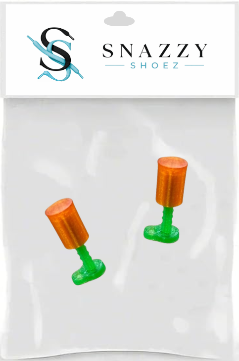

This project helped me better understand the full design process from ideation to prototyping. One thing I especially appreciated was the structure laid out by the project instructions. Instead of trying to change everything at once, we were encouraged to first build our original idea and then separately test a CAD change, a CAM change, and a material change. I really enjoyed this experimental approach because it made it easier to see which manipulated variable had the biggest impact on the final product. Through these iterations, we learned a lot about our design. For example, slowing down the speed of the 3D printer about doubled the amount of force our print could withstand. Since durability was one of our biggest priorities, this was a really important discovery. At the same time, appearance also mattered to us because we wanted the product to feel polished and intentional. Adjusting the screw design for the peg in OnShape ended up making the print look much neater and more professional.
I also really enjoyed the challenge of figuring out a completely new way to tie shoes using one hand. The process felt creative and novel. We spent a lot of time watching videos, experimenting ourselves, and trying to understand what movements actually worked. One interesting challenge was that even when we successfully tied the shoe, it was sometimes difficult to remember exactly what we had done. That made us realize how important a strong user guide would be if we wanted the product to actually be usable by someone else. Fortunately, creating the instructions went relatively smoothly because I already had experience using Canva and iMovie. That allowed us to spend less time learning software and more time focusing on the clarity and quality of the instructions themselves. We tested our guides by giving them to friends and observing where they got confused. This became an important feedback loop because we quickly learned that some steps that seemed obvious to us were not obvious to others at all. As a result, we revised the instructions to make them more specific and easier to follow.
This project also helped me learn what I enjoy and what I find challenging about creating a prototype from start to finish. It felt like a culmination of many of the skills we practiced throughout the class. I really liked the ideation stage. I enjoyed visualizing what I wanted the product to look like, researching existing solutions, and especially putting myself in the shoes of the user. Thinking about accessibility and usability made the project feel meaningful. At the same time, one challenge was knowing when to stop planning and actually begin building. Once we started printing prototypes, it was exciting to see our ideas physically come to life. However, I did not expect how repetitive the process would become. Since one small print was essentially the entire project, every detail mattered. We repeatedly reprinted the peg and cap, adjusting the shape, size, durability, and appearance until we met our goals. Although this process could sometimes be frustrating, it ultimately taught me patience, problem solving, and perseverance.
If you go to my one GitHub repository, you can view the final deliverables, including card instructions, video instructions, and our presentation recording. This was a great project!
